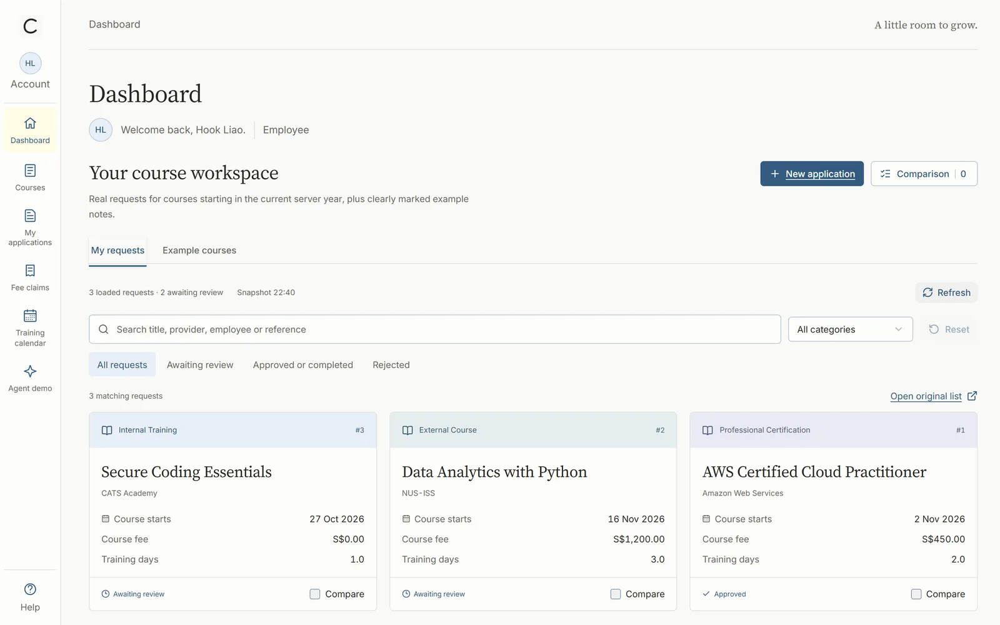
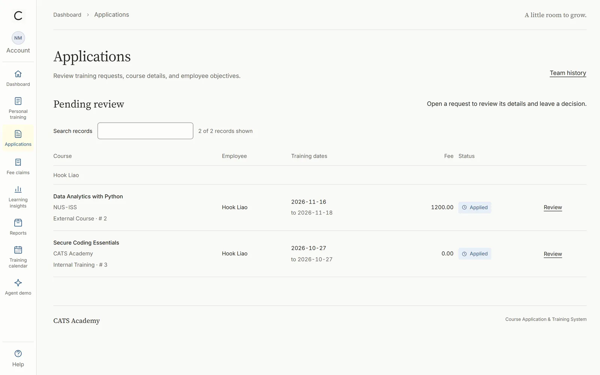
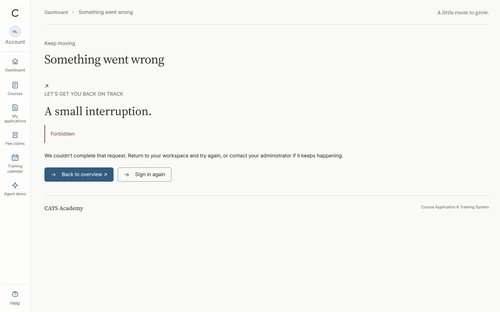
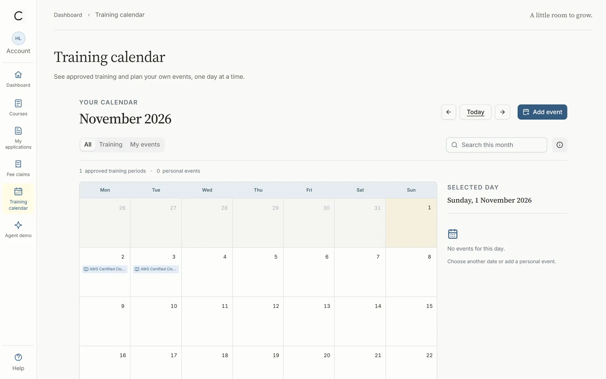

← All work
Case study · Web application
Course approvals, locked down and tested
CATS takes employee training from course application to manager approval to fee reimbursement. I owned its security layer and the quality of the approval workflow.
The problem
Three roles, one set of rules
Training requests have to respect working days, public holidays, annual quotas, budgets and overlapping leave. Employees, managers and administrators each see different data and take different actions. Before the security work, passwords were stored in plain text and there was no central access control.
How access works
Deny by default
Every page needs a login. Manager and admin areas check the role on the server, so a typed-in URL gets a 403, not a page.
Access matrixCovered by 15 integration tests.
| Role | /employee | /manager | /admin |
|---|---|---|---|
| Employee | 200 | 403 | 403 |
| Manager | 200 | 200 | 403 |
| Admin | 200 | 200 | 200 |
| Signed out | login | login | login |
The rules I wroteFrom
SecurityConfig.java..requestMatchers("/", "/login", "/admin/login").permitAll()
.requestMatchers("/manager/**").hasAnyRole("MANAGER", "ADMIN")
.requestMatchers("/admin/**").hasRole("ADMIN")
.anyRequest().authenticated()
return new BCryptPasswordEncoder();
Decisions
Three calls that shaped it
-
Bridge, don’t rewrite
- Instead of
- Replacing the team’s session login with Spring’s form login.
- Because
- A small filter hands the existing session to Spring Security. Nobody else’s code had to change.
-
Hash every password
- Instead of
- Plain-text passwords in the database.
- Because
- BCrypt across login, seed data and admin user creation, with server-side length rules.
-
Fix the cause, then write the rule
- Instead of
- Patching the HTTP 500s page by page.
- Because
- The root cause, a model key shadowed by a Thymeleaf built-in, became a team coding rule plus regression tests.
In the app
Employee. Requests, statuses and the remaining annual allowance.
Manager. A review queue; every decision needs a written reason.
Wrong role. An employee who types a manager URL gets a friendly 403.
Calendar. Approved training lands on the employee’s calendar.
One request, three points of view




My contribution
What I built
- Security layer. Role-based URL rules for employee, manager and admin areas, CSRF protection, and the session bridge filter.
- Password storage. BCrypt hashing across login, seed accounts and user administration.
- Root-cause fix. Restored the four missing manager views and renamed the shadowed model key, with a written root-cause note for the team.
- Tests. 15 security integration tests and 6 approval-flow regression tests, plus an in-memory H2 profile so the suite runs without MySQL.
Quality
In numbers
- 41backend tests, 0 failures (rerun for this page)
- 21of those tests written by me
- 4access levels tested: three roles plus signed out
- 0plain-text passwords after the BCrypt migration